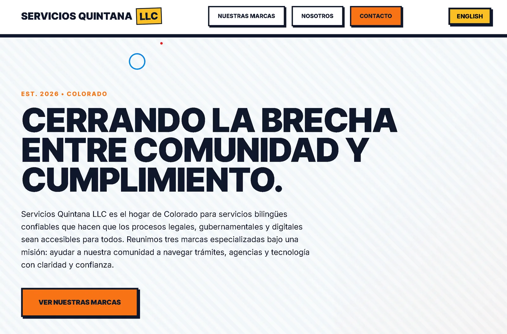

Bilingual services agencyAgencia de servicios bilingüe
Servicios Quintana LLC
Servicios Quintana LLC
A bilingual platform for an agency that prepares, translates, and helps clients navigate regulated healthcare and government documents. Accessible throughout and structured for confidential document workflows.
Una plataforma bilingüe para una agencia que prepara, traduce y ayuda con documentos regulados de salud y gobierno. Accesible y estructurada para flujos de documentos confidenciales.